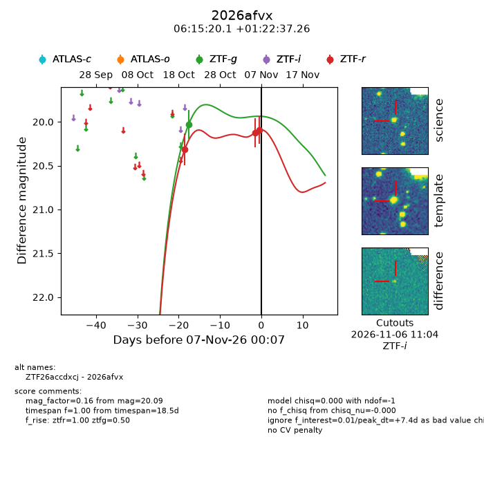
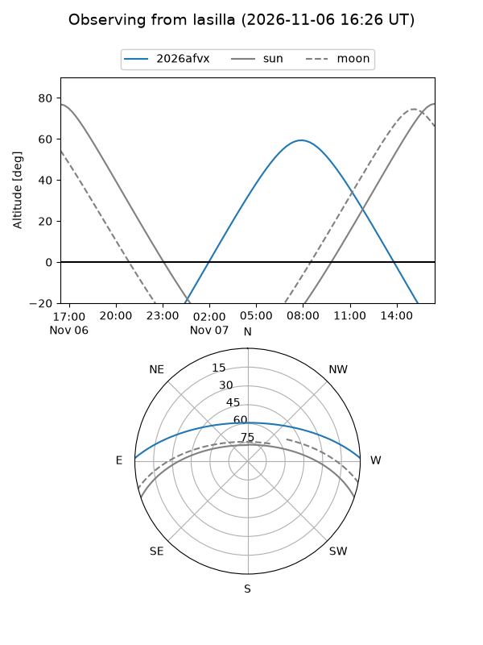
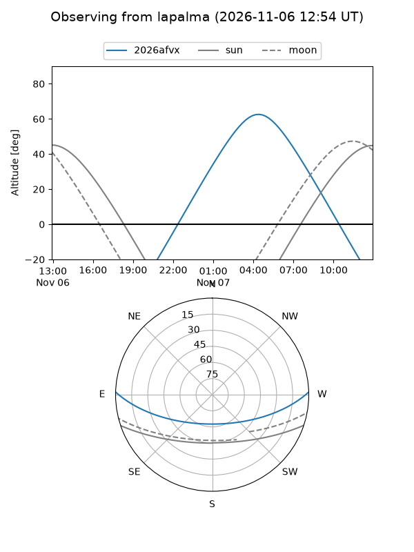
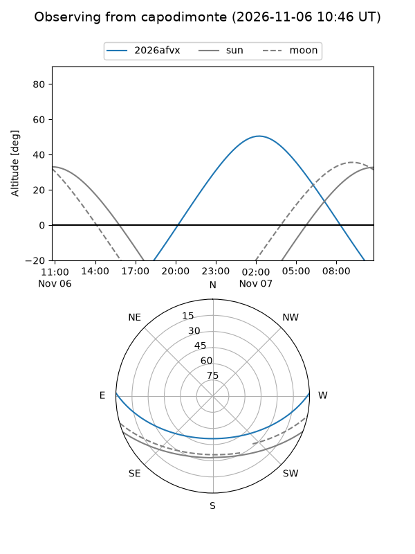
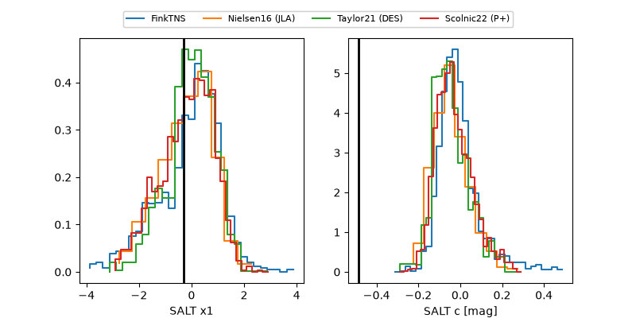

2026afvx
Target 2026afvx at 2026-11-07 00:09
Aliases and brokers:
FINK-ZTF: ztf.fink-portal.org/ZTF26accdxcj
Lasair-ZTF: lasair-ztf.lsst.ac.uk/objects/ZTF26accdxcj
ALeRCE-ZTF: alerce.online/object/ZTF26accdxcj
YSE-PZ: ziggy.ucolick.org/yse/transient_detail/2026afvx
TNS name: wis-tns.org/object/2026afvx
Direct TNS query: direct search
alt names
ZTF26accdxcj (ztf,fink_ztf)
2026afvx (tns,yse)
Coordinates:
equatorial (ra, dec) = 93.8339,+1.37702
equatorial (HMS+DMS) = 06:15:20.14,+01:22:37.26
galactic (l, b) = (207.5567,-7.38980)
Flags:
peak dt: +7.4
Photometry:
last ztfg=20.03, ztfr=20.09
1 ztfg, 3 ztfr detections
Lightcurve

Visibility



Additional plots
